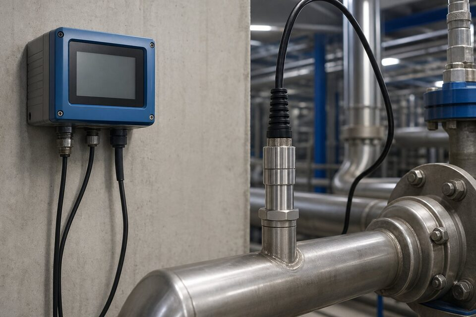

اصل اندازهگیری
آب خالص تقریباً نارسانا است؛ اما با حل شدن نمکها، اسیدها و بازها، یونهای آزاد ایجاد شده و قابلیت رسانایی بالا میرود. هدایتسنج با اعمال سیگنال بین الکترودها و اندازهگیری پاسخ، این رسانایی را سنجیده و بر حسب واحد استاندارد گزارش میکند. چون رابطه بین هدایت و غلظت یونی تقریباً خطی است، این اندازهگیری شاخصی سریع و ارزان برای کیفیت کلی آب فراهم میکند؛ البته هدایت به تنهایی نوع آلاینده را مشخص نمیکند و برای تحلیل دقیقتر، آنالایزرهای تکمیلی لازم است.

سنسورهای الکترودی و القایی
در سنسورهای الکترودی، دو یا چند الکترود مستقیماً در تماس با سیال قرار دارند؛ این طرح برای هدایتهای پایین مانند آب دیونیزه دقیقترین انتخاب است اما الکترودها در معرض رسوب، خوردگی و آلودگیاند و نیاز به تمیزکاری دورهای دارند. در سنسورهای القایی، دو سیمپیچ درون بدنه قرار دارند و سیال بدون تماس با قطعات فلزی، حلقه القایی را کامل میکند؛ این طرح برای هدایتهای بالا، سیالهای خورنده و کثیف عالی است اما در رنجهای بسیار پایین حساسیت کافی ندارد. انتخاب بین این دو، اولین تصمیم در خرید هدایتسنج است.
جبران دما و کالیبراسیون
هدایت آب به شدت به دما وابسته است؛ تقریباً دو درصد به ازای هر درجه تغییر. بنابراین هر سیستم اندازهگیری باید سنسور دمای داخلی داشته باشد و خوانش را به دمای مرجع تصحیح کند؛ در غیر این صورت مقایسه خوانشها در زمانهای مختلف بیمعنا میشود. کالیبراسیون نیز با محلولهای استاندارد هدایت انجام میگیرد و دوره آن به حساسیت نقطه اندازهگیری بستگی دارد. در نقاط حساس مانند آب تغذیه بویلر، کالیبراسیون دورهای با محلول تازه و ثبت نتایج، بخشی از برنامه کیفیت است.
کاربردهای اصلی
- تصفیهخانههای آب: پایش کارایی فیلترها و ممبرانها.
- بویلرها و سیستمهای آب تغذیه: کنترل سیکل تغلیظ و بلودان.
- برجهای خنککننده: پایش سیکل غلظت و تزریق مواد شیمیایی.
- صنایع دارویی و نیمهرسانا: آب فوق خالص با هدایت بسیار پایین.
- پایش پساب و خروجی تصفیهخانهها.
معیارهای انتخاب و استعلام
در استعلام هدایتسنج، رنج هدایت مورد انتظار، دمای کاری سیال، خورندگی و آلودگی سیال، نوع نصب و جنس بدنه، خروجی و پروتکل ارتباطی و الزامات بهداشتی در صورت وجود را ذکر کنید. برای آبهای بسیار خالص، سنسورهای مخصوص با سلول اندازهگیری کوچک انتخاب میشود و برای پساب و سیالهای کثیف، سنسور القایی. مدارک کالیبراسیون اولیه و در صورت نیاز، گواهی مواد بخش خیس نیز باید در تحویل گنجانده شود.
خطاهای رایج و عیبیابی هدایتسنج
هدایتسنجها تجهیزاتی ساده به نظر میرسند، اما منابع خطای متعددی دارند که آشنایی با آنها، کیفیت اندازهگیری را تضمین میکند. شایعترین خطا، آلودگی سطح سنسور است: رسوبگذاری، چربی یا رشد بیولوژیکی روی الکترودها، ثابت سلول را تغییر و خوانش را منحرف میکند؛ این انحراف معمولا تدریجی است و اگر با کالیبراسیون دورهای مقایسه نشود، پنهان میماند. تمیزکاری دورهای با روش مناسب هر سنسور و پایش روند مقادیر کالیبراسیون، ابزار اصلی مقابله با این مشکل است. خطای دوم، حبابهای هوا در سنسورهای جریانعبوری است که باعث پرش یا بیثباتی خوانش میشوند؛ نصب صحیح با جهت جریان مناسب و حذف نقاط تجمع هوا این مشکل را رفع میکند. سوم، مشکلات جبران دماست: اگر سنسور دمای داخلی خراب باشد یا ضریب جبران برای سیال نامناسب انتخاب شده باشد، خوانش در دماهای مختلف خطای سیستماتیک خواهد داشت؛ در کاربردهای دقیق، اندازهگیری مرجع در دمای ثابت یا استفاده از ضریب مناسب اهمیت دارد. چهارم، تداخل الکتریکی و مشکلات زمین در سنسورهای القایی و الکترودی است که خود را به صورت نویز یا خوانشهای پرشی نشان میدهد. در سنسورهای القایی، تجمع رسوب در مجرای داخلی نیز میتواند دقت را کاهش دهد و نیازمند بازرسی دورهای است. رویه عیبیابی استاندارد این است که ابتدا سنسور را در محلول مرجع استاندارد تست کنید؛ اگر پاسخ درست بود، مشکل از نصب یا فرایند است و اگر نبود، سنسور نیازمند تمیزکاری یا تعویض است.
جمعبندی
هدایتسنج سادهترین و سریعترین ابزار پایش کیفیت یونی آب است. با انتخاب درست بین سنسور الکترودی و القایی، جبران دمای دقیق و کالیبراسیون دورهای، این اندازهگیری سالها پایدار میماند و مبنای تصمیمهای عملیاتی در تصفیه آب، بویلر و برج خنککننده میشود.
سوالات رایج
هدایت الکتریکی چه چیزی را نشان میدهد؟
توانایی آب در عبور جریان برق که با غلظت یونهای محلول رابطه مستقیم دارد؛ هرچه نمکها و مواد یونی بیشتر باشد، هدایت بالاتر است. به همین دلیل شاخصی سریع برای کیفیت کلی آب محسوب میشود.
تفاوت سنسور القایی و الکترودی چیست؟
سنسورهای الکترودی برای هدایتهای پایین دقیقترند اما در معرض رسوب و آلودگی قرار دارند؛ سنسورهای القایی بدون تماس مستقیم کار میکنند، برای هدایتهای بالا و سیالهای کثیف مناسبترند اما در رنجهای پایین دقت کمتری دارند.
چرا جبران دما مهم است؟
هدایت آب با دما تغییر میکند؛ بدون جبران، خوانشها در فصلها و شرایط مختلف قابل مقایسه نیستند. ترانسمیترها با سنسور دما، خوانش را به دمای مرجع تصحیح میکنند.
هدایتسنج در چه نقاطی نصب میشود؟
ورودی و خروجی سیستمهای تصفیه، بویلرها و برجهای خنککننده، خطوط آب مقطر و دیونیزه و پایش پساب؛ هر جا کیفیت یونی آب باید پایش شود.
مطالب مرتبط
با ذکر رنج هدایت، سیال و شرایط نصب، سنسور و ترانسمیتر هدایت از برندهای معتبر عرضه میشود.
مشاهده صفحه محصول ← ثبت RFQ همین محصولتامین این تجهیزات را به پیشرو تجهیز فرتاک بسپارید
شرکت پیشرو تجهیز فرتاک تامینکننده تخصصی تجهیزات صنعتی برای پروژههای نفت، گاز، پتروشیمی، فولاد و نیروگاهی است. برای دریافت پیشنهاد فنی و قیمت، استعلام (RFQ) خود را ثبت کنید تا کارشناسان مهندسی فروش در کوتاهترین زمان پاسخ دهند.
- تامین ابزار دقیقترانسمیترها و آنالایزرهای برندهای معتبر
- تامین تجهیزات صنایع نفت و گازپکیج مواد مطابق وندورلیست